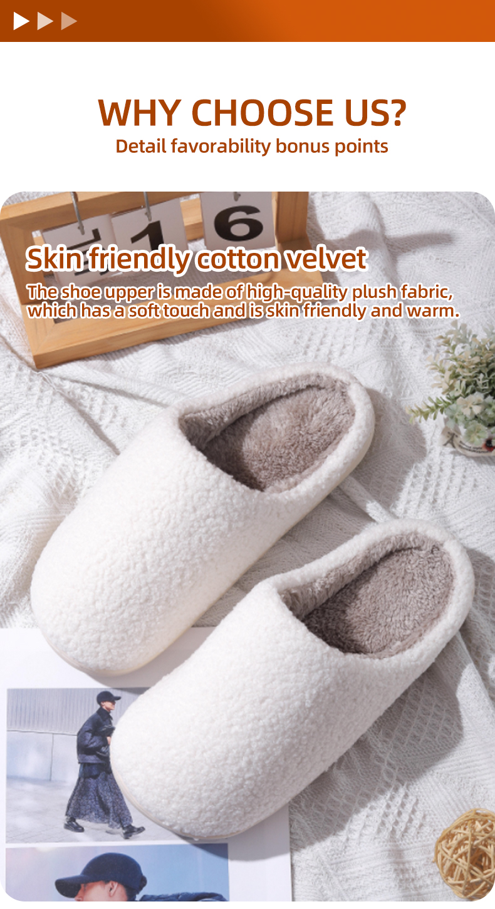
01 / Upper
Skin-friendly cotton velvet
A soft, warm upper creates the tactile hook for winter home, hospitality and gifting collections.
A plush indoor slipper platform for lifestyle brands, hotels, gift programs and retailers. Start with the base silhouette, then make the fabric, pattern, logo and packaging your own.
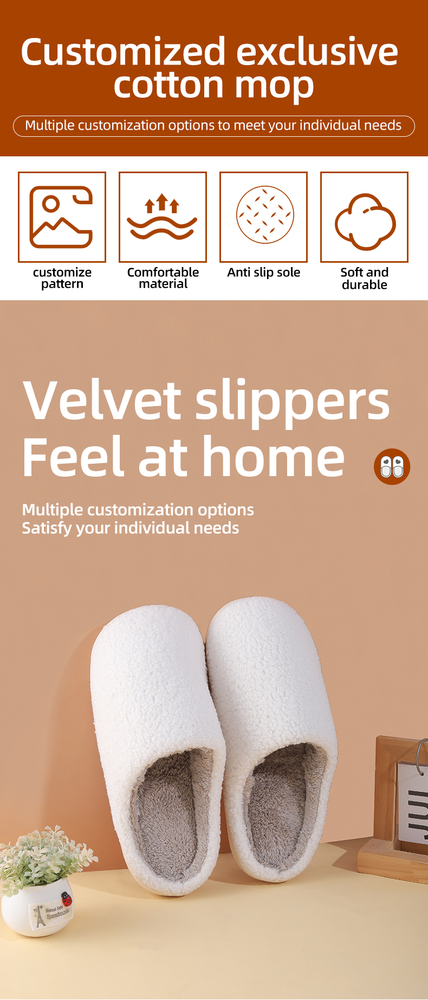
Soft-touch fabric direction with seasonal and colorway flexibility.
Fluffy lining designed to wrap the foot in a warm, cozy feel.
Textured sole detail shown in the supplied product specification.
From a blank base to a finished branded product and ship-ready pack.
The supplied product story gives buyers a clear view of the materials and functional details behind the cozy first impression.

A soft, warm upper creates the tactile hook for winter home, hospitality and gifting collections.
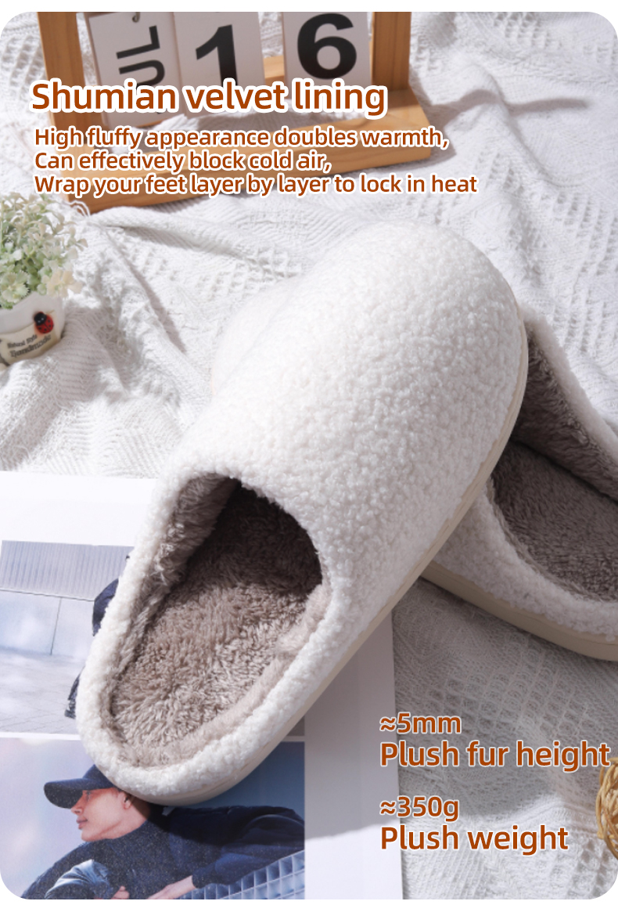
The supplied artwork calls out a fluffy lining and approximately 5mm plush height.
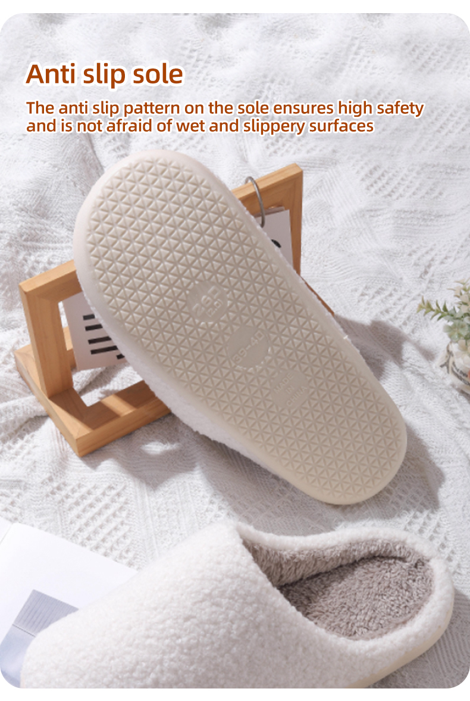
A textured anti-slip pattern is designed for everyday indoor movement across smooth surfaces.
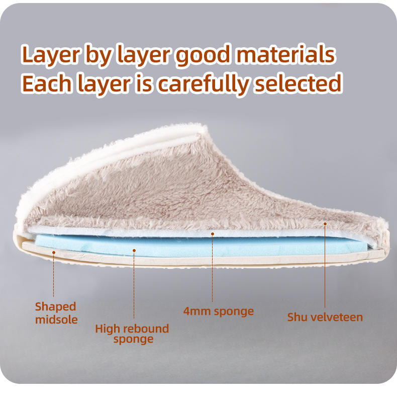
The cross-section visual shows a shaped midsole, rebound sponge, 4mm sponge and velvet upper working together as a layered build.
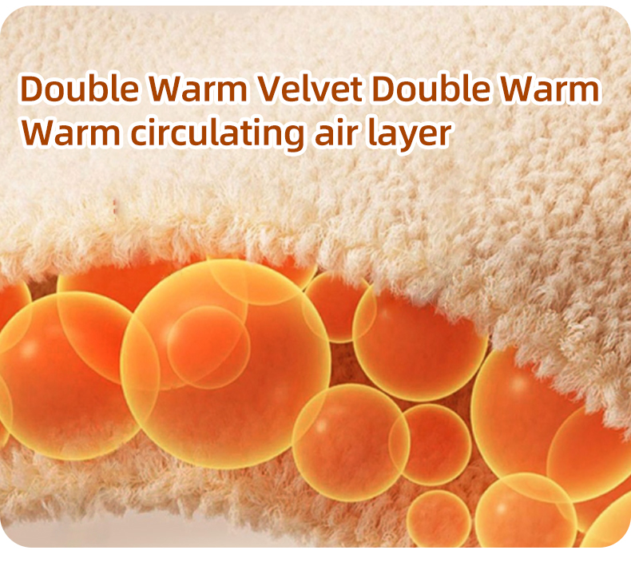
The supplied visual illustrates a warm circulating air layer inside the velvet surface — a clear story for colder-season collections.
Share a sketch, logo, theme or color direction. We can translate the idea into a finished slipper program for your channel.
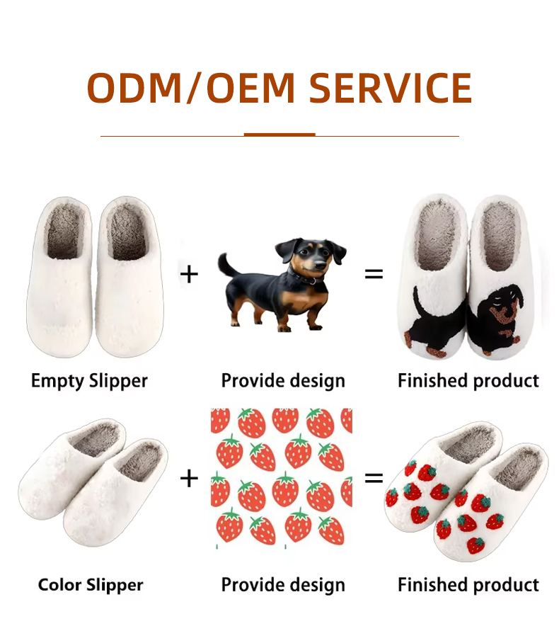
Start with the silhouette and comfort direction.
Select fabric, color and the feel of the upper.
Apply logos, patterns, characters or seasonal themes.
Align hangers, labels, boxes and outer cartons to your brand.
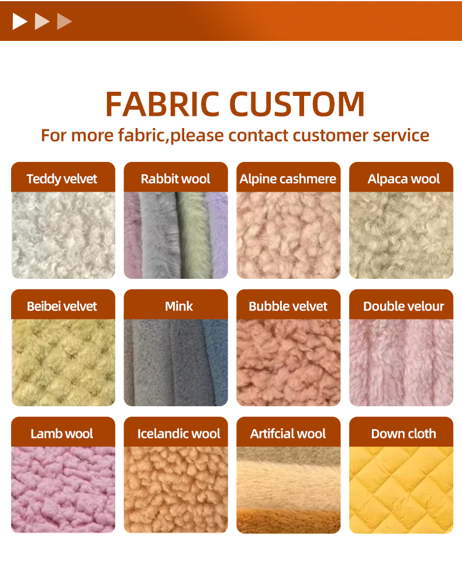
Fabric options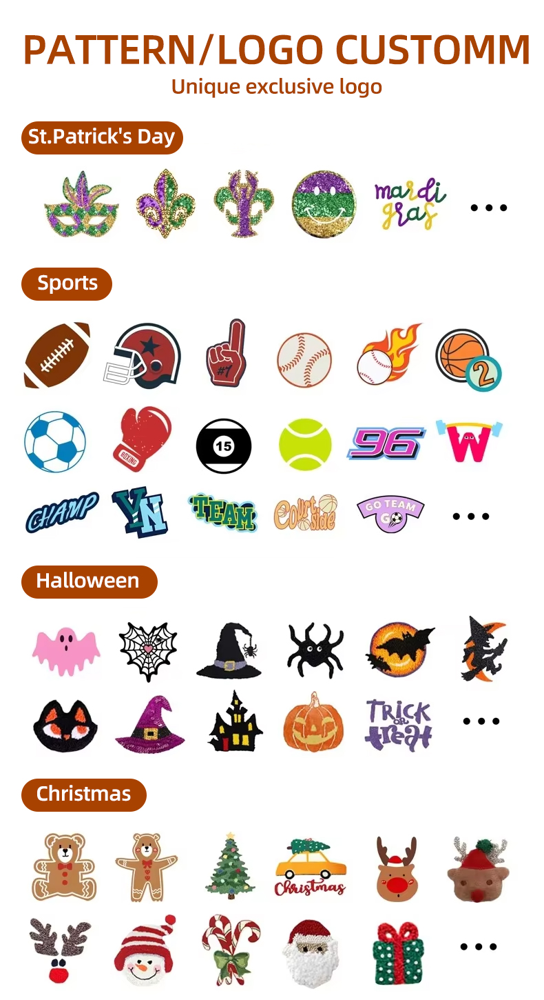
Logo & pattern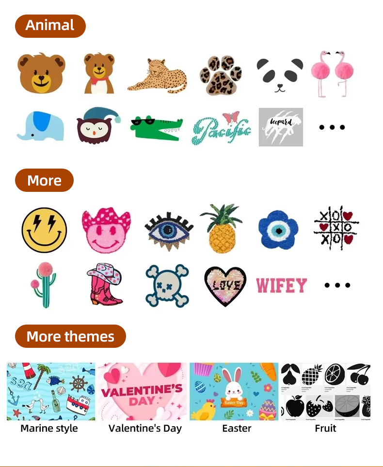
Seasonal themes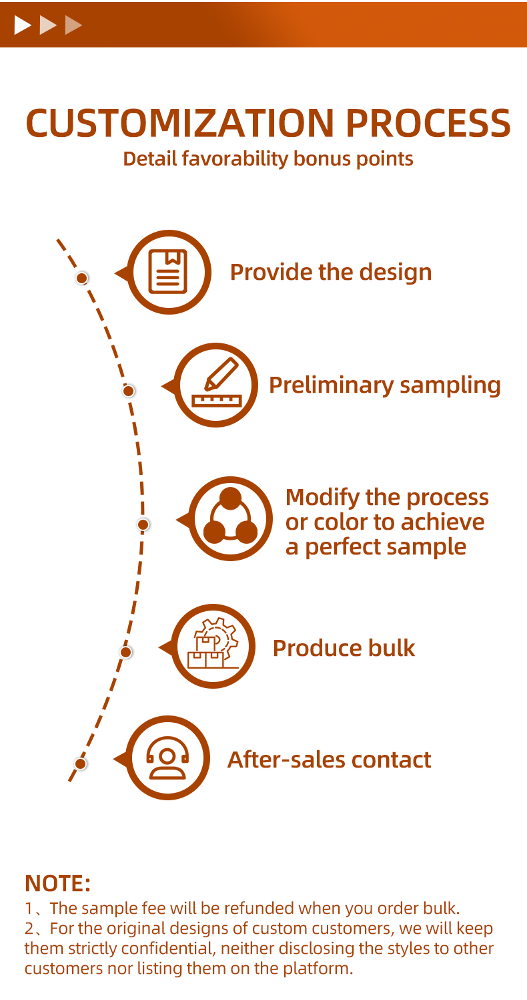
Our team keeps the custom route visible: design, preliminary sample, refinement, bulk production and after-sales contact.
Beyond the slipper itself, the supplied materials show the practical support behind a private-label shipment.
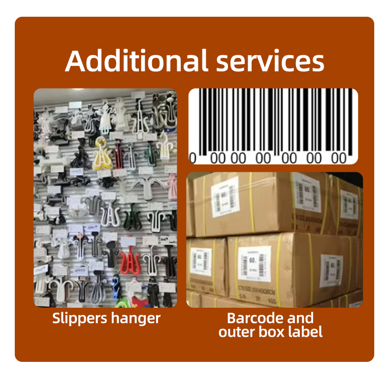
Coordinate hangers, barcode labels and outer-box markings with your shipment brief.
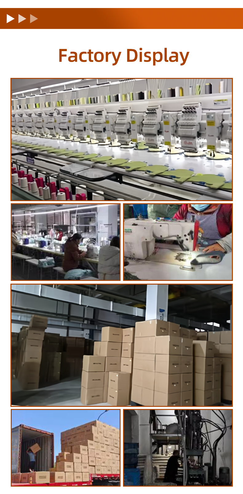
Production, sewing, packing and warehouse scenes help buyers understand the workflow.
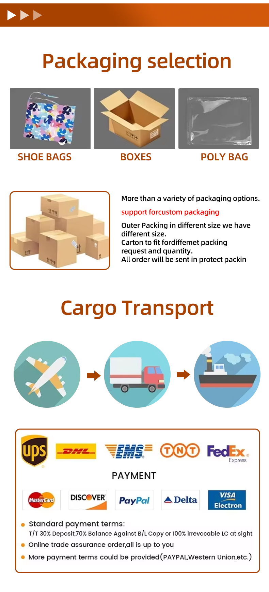
Select shoe bags, boxes or poly bags, then align the outer pack with your delivery plan.
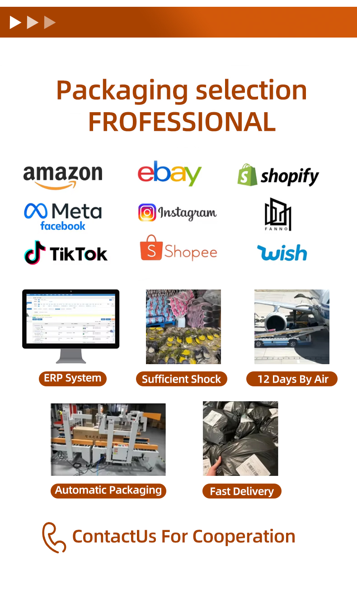
The product material highlights support for marketplace and social-commerce packaging workflows. Tell us your channel requirements and we will scope the right pack.
Share your target quantity, artwork, fabric direction or packaging needs. We will reply with a practical route for sampling and production.